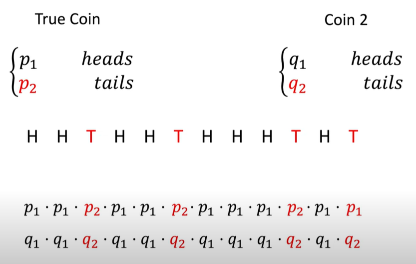

Kullback-Leibler Divergence (KL Divergence) #
| Last Edited | 25/06/2023 |
Definition: #
- Measures the distance between 2 prabability distributions
Explanation + Proof: #
Base Video: Intuitively Understanding the KL Divergence - YouTube

Sequence of flips: H -> H -> T …..
Multiply the probabilities from both the coins for the corresponding heads and tails. It is nothing but:
-
for True coin: P1 raise to something and P2 raise to something else
-
For coin2: Q1 raise to soemthing and Q2 raise to something else

-
after applying log to the RHS: (** –> Explained at the end)

-
As the number of observations tends towards infinity:
-
Nh/n ~~ p1
-
Nt/N ~~ p2
This leads us to the final log expression:
-

General Formulae: #
“This computes the distance between 2 distributions motivated by looking at how likely the 2nd distribution would be able to generate samples from the first distribution”
Cross-entropy Loss is very related to KL Divergence
Important Notes: #
-
KL Divergence is un-symmetric i.e the divergence depends on the distribution placed on the denominator.
-
In other words: Divergence of distribution1 wrt distribution2 is not same as divergence of distribution2 wrt distribution1.
** Why take log of probability ? #
From the probabilities of ratio, why did we suddenly take log of ratio ??
-
The log of probabilities is closely related entropy. In information theory , the entropy of a random variable is the average level of “information”, “surprise”, or “uncertainty” inherent to the variable’s possible outcomes.

KL Divergence is also known as relative entropy between 2 distributions. #
For good reference to entropy, watch statquest video:
Extra Note: #
20/05/2024
- Adding some random thinking:
- I waas just thinking, if I had 2 datasets with different strength (Not probability distribution right away), can I calculate drift with KL Divergence ?